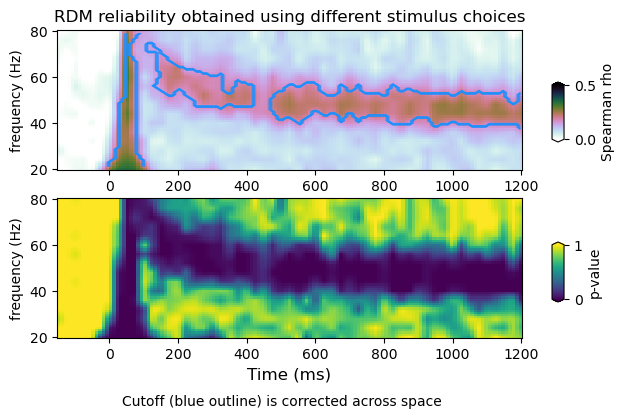

3. Multiviariate TFR statistics, a mini-tutorial¶
To run the notebook, clone the package (or your fork) locally and then:
3.1. Compute RDM reliability using permutations¶
[7]:
import os
import numpy as np
from tfrStats.load_tfr_rdm import load_tfr_rdm as load_tfr_rdm
from tfrStats.mvtfr_reliability import mvtfr_reliability as mvtfr_reliability
fbands = ['low','high','higher','mua']
blocks = ['grat', 'nat','obj','bck']
#example_data = '/Users/nicogravel/Documents/Websites/tfrStats/tfrStats_local/docs/source/notebooks/example_data/'
example_data = '/Volumes/Gandalf/MWlamprop/results/stats/multivariate/'
# Loop over blocks and frequency bands
for block in range(2,4):
for fband in range(1,2):
# Configure inputs
conf = {
'paths' : [
'/Users/nicogravel/Documents/Gandalf/MWlamprop/data/results_bckp/',
# '/mnt/hpc_slurm/projects/MWlamprop/Analysis/02_data/spectral_dec/'
#'/mnt/hpc/projects/MWlamprop/Analysis/02_data/preprocessed/',
#'/mnt/pns/home/graveln/Documents/MWlamprop/results/spectral_dec/',
#'/mnt/hpc/projects/MWlamprop/Analysis/02_data/spectral_dec/',
'/Volumes/Gandalf/MWlamprop/data/',
#'/Users/nicogravel/Documents/Gandalf/MWlamprop/data/results_bckp/',
#'/Users/nicogravel/Documents/Gandalf/MWlamprop/data/processed/spectral_dec/',
'/Volumes/Gandalf/MWlamprop/results/'
],
'methods' : ['spectral','mvpa'],
'decvars' : ['spw','gpr','spwgpr'],
'method' : 1,
'dvar' : 0,
'fband' : fband,
'cond' : block,
'sess' : 0,
'layers' : False,
'lump' : True,
'rsa' : True,
'n_perm' : 2
}
# Load data
rdms = load_tfr_rdm(conf)
rdm1 = rdms['rdm_split1']
rdm2 = rdms['rdm_split2']
rdm = rdms['rdm_whole']
print(rdm.shape)
# Compute reliability
tfr, tfr_null = mvtfr_reliability(rdms,conf)
# Prepare outputs
tfrs = {
'tfr' : tfr,
'tfr_null' : tfr_null,
}
# Save outputs
fname = os.path.join(example_data + 'mvtfr_'
+ blocks[block] + '_'
+ fbands[fband] + '_' + str(conf['n_perm'])
+ '.npy')
print(fname)
np.save(fname,tfrs)
session: 0
(12, 16, 36, 36, 113)
(12, 16, 36, 36, 113)
/Volumes/Gandalf/MWlamprop/results/stats/multivariate/mvtfr_obj_high_2.npy
session: 0
(12, 16, 36, 36, 113)
(12, 16, 36, 36, 113)
/Volumes/Gandalf/MWlamprop/results/stats/multivariate/mvtfr_bck_high_2.npy
[2]:
import numpy as np
# Save outputs
fname = os.path.join(example_data + 'mvtfr_'
+ blocks[block] + '_'
+ fbands[fband]
+ '.npy')
print(fname)
np.save(fname,tfrs)
/Users/nicogravel/Documents/Websites/tfrStats/tfrStats_local/docs/source/notebooks/example_data/mvtfr_obj_higher.npy
3.2. Plot RDM reliability¶
Similarly to the problem of taking the extreme values at each iteration of the permutaion when computing univariate TFRs. Whern computing multivariate TFRs, one is confronted with the decisio of whether to take the extreme value or the average.
[5]:
import numpy as np
from tfrStats.plot_mvtfr_stats import plot_mvtfr_stats as plot_mvtfr_stats
fband = 1
#fname = str(example_data + 'mvtfr_example_high.npy')
#fname = str('/Volumes/Gandalf/MWlamprop/results/stats/multivariate/' + 'mvtfr_bck_high_1000.npy')
#tfrs = np.load(fname,allow_pickle=True).item()
#tfr = tfrs['tfrs_emp']
#tfr_null = tfrs['tfrs_null']
fname = str('/Volumes/Gandalf/MWlamprop/results/stats/multivariate/mvtfr_nat_high_2.npy')
print(fname)
tfrs = np.load(fname,allow_pickle=True).item()
tfr_emp = tfrs['tfr']
tfr_null = tfrs['tfr_null']
plot_mvtfr_stats(tfr_emp, tfr_null, fband, alpha = 0.05, correction='space')
plot_mvtfr_stats(tfr_emp, tfr_null, fband, alpha = 0.05, correction='frequency')
plot_mvtfr_stats(tfr_emp, tfr_null, fband, alpha = 0.05, correction='space-frequency')
/Volumes/Gandalf/MWlamprop/results/stats/multivariate/mvtfr_nat_high_2.npy
(16, 113)
(4, 16, 113)
dimensions : (16, 113) (4, 12, 16, 113) (4, 16, 113)
(16, 113)
(4, 12, 113)
dimensions : (16, 113) (4, 12, 16, 113) (4, 12, 113)
(16, 113)
(4, 113)
dimensions : (16, 113) (4, 12, 16, 113) (4, 113)



[4]:
import numpy as np
from tfrStats.plot_dmvtfr_stats import plot_dmvtfr_stats as plot_dmvtfr_stats
fband = 1
fname = str(example_data + 'mvtfr_example_high.npy')
tfrs = np.load(fname,allow_pickle=True).item()
tfr_emp = tfrs['tfrs']
tfr_null = tfrs['tfrs_null']
plot_dmvtfr_stats(tfr_emp, tfr_null, fband, alpha = 0.05, correction='space')
#plot_dmvtfr_stats(tfr_emp, tfr_null, fband, alpha = 0.05, correction='frequency')
plot_dmvtfr_stats(tfr_emp, tfr_null, fband, alpha = 0.05, correction='space-frequency')
(12, 16, 113)
(20, 12, 16, 113)
peak frequency range : 40.0 56.0
power average within peak: 0.4162180721230189
(12, 113)
null: (20, 12, 4, 113)
(20, 4, 113)
dimensions : (12, 113) (20, 12, 4, 113) (20, 4, 113)
(12, 16, 113)
(20, 12, 16, 113)
peak frequency range : 40.0 56.0
power average within peak: 0.4162180721230189
(12, 113)
null: (20, 12, 4, 113)
(20, 113)
dimensions : (12, 113) (20, 12, 4, 113) (20, 113)